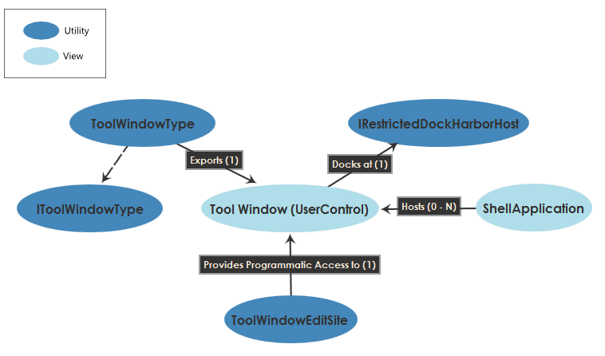

The Docking System
The Diagram SDK docking system manages the docking of tool windows within a shell application window and provides an API through which you can customize tool window appearance and docking behavior.
Docking System Architecture
The following diagram illustrates the high-level architecture of the docking system.

Docking System Theory of Operation
The Diagram SDK provides support for tool windows, which are semi-autonomous, yet subordinate to the main shell application window. Tool windows can either float freely or dock within the main application window, and you can customize their appearance and docking behaviors using the APIs described in this document.
Creating a Custom Tool Window
Complete the following steps to create a custom tool window:
- Create the visual for your window (e.g. a UserControl with a nested Grid that contains your tool window's UI elements.
- Create a new class that derives from ToolWindowType.
- Export your ToolWindowType class as an IToolWindowType.
- Declare ExportMetadataAttributes to customize your tool window. See the next section for more information about customization options.
- Override the IToolWindowType.CreateToolWindow() method and return an instance of your visual class.
The following example code demonstrates a simple ToolWindowType implementation.
[Export(typeof(IToolWindowType))]
[ExportMetadata("UniqueID", "{804b449c-a447-7c94-a4f8-d9317b9eba73}")]
[Name("MyCustomToolWindow")]
[ExportMetadata("SmallImagePath", "")]
[ExportMetadata("LargeImagePath", "")]
[ExportMetadata("DefaultCreationTime", ToolWindowCreationTime.UserRequested)]
[ExportMetadata("DefaultCreationMode", ToolWindowCreationMode.Pinned)]
[ExportMetadata("DefaultLocation", ToolWindowLocation.BottomRightDock)]
[ExportMetadata("AssociatedDocumentType", ArchitecturalDocument.TypeName)]
[ExportMetadata("Weight", 0.5)]
[ExportMetadata("ForceOpenPinned", true)]
public class MyToolWindowType : ToolWindowType
{
public override NationalInstruments.Core.PlatformVisual CreateToolWindow()
{
return new MyCustomToolWindow();
}
}
Customizing Tool Window Docking Behavior
Tool window docking behavior customizations are exposed as properties on the IToolWindowTypeInfo interface and are set through ExportMetadata declarations on your ToolWindowType. Common customizations include:
- Make a tool window float upon creation - set FloatsOnCreation to true
- Remove a tool window's tab bar – set ShowWindowTabBarWhileDocked and/or ShowWindowTabBarWhileFloating to false
- Include standard window controls on a tool window – set CanMaximizeRestoreAndClose to true (note, however, that tool windows cannot be minimized)
Refer to the the IToolWindowTypeInfo IToolWindowTypeInfoRef interface documentation for the complete list of options and their default values.
Creating Custom Dock Harbors
The phrase dock harbor refers to the spaces within the shell window that hold docked tool windows. By default, the only available dock harbors are the spaces that the shell application highlights when the user drags a tool window. If these default dock harbors are insufficient for your use case, you can define custom dock harbors for your tool window(s) by providing:
- An IRestrictedDockHarborHost
- An IToolWindowType for the tool window that sets UsesRestrictedDockHarbor to true
- A visual to act as the dock harbor itself
The IRestrictedDockHarborHost interface provides methods to perform docking system customizations. The interface’s documentation explains where each of its methods fit in the scheme of the docking system’s execution logic. However, the following points shed additional light on the interface:
- You can use the IRestrictedDockHarborHost.AllowedToolWindowIsDocking() method to display visual docking hints similar to those provided by default. The docking system calls this method whenever the user starts dragging a tool window whose Guid fits the host’s AllowedToolWindowId, so this is a logical place to perform docking set-up processes in addition to displaying visual hints.
- When the user stops dragging a tool window, the docking operation for the tool window stops and the docking system calls one of two functions, depending on how the operation ended:
- If the user releases the mouse in the visual returned by GetDockHarbor, the docking system calls the IRestrictedDockHarborHost.Dock() method. It is the IRestrictedDockHarborHost's responsibility to facilitate the interaction between the dock harbor visual and the tool window.
- If the user releases the mouse anywhere else, the docking system calls the IRestrictedDockHarborHost.AllowedToolWindowFinishedDockingElsewhere() method.
- Note that each custom dock harbor can be used with only one type of tool window.
Persisting Docking Layouts
The term docking layout refers to the complete configuration of all tool windows on the screen – which ones are open, where they are, whether they are docked, etc. By default, the docking system persists the user's docking layout in the application preferences. However, you can choose to persist the docking layout in the open project’s settings file instead by setting ProjectSettings.PersistentLayoutRecordingRule to UpdateLayoutRecord.
Programmatically Accessing Docking States
ToolWindowEditSite provides programmatic access to the docking state of a particular tool window. You can access a tool window's edit site by passing its visual to the ToolWindowEditSite.GetEditSite() method. External clients can call DocumentEditSite.ShowToolWindow() to access the visual for a particular tool window. ToolWindowEditSite offers a number of useful properties and methods, including: